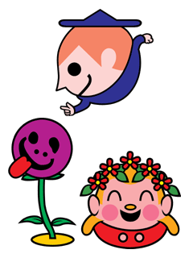
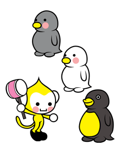
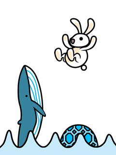
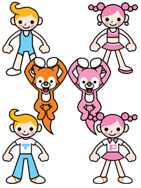
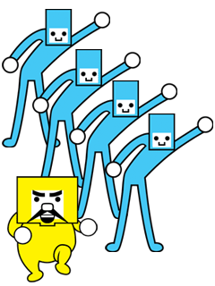

▲index
｜
ステージ１
｜
ステージ２
｜
ステージ３
｜
ステージ４
｜
ステージ５
｜
ステージ６
｜
おまけコーナー
｜
もろもろ

どうもこの魔法使いは見習いのようだ。
彼は修行のため、
このお嬢ちゃんのいる町にやってきたらしい。
この魔法使い、ワルツと美しい花が大好きで
ワルツの魔法で、花を咲かせることができるんだって！
そしてその魔法でお嬢ちゃんを喜ばせようとしているなんて、なんてステキなのでしょう！！
そうそう、見習いのようだって言ったけど、
それはさっき、失敗してバケモノを呼び出してしまっているのを偶然見ちゃったから。
アレ見たら、お嬢ちゃん 泣くカモ…
今、彼らは なかよしだ。
でも以前のペンギンたちには葛藤があった。
「なぜ、さるに命令されるんだ。オレたちが鳥類だからか？」
そんなペンギンたちのうちの ある１羽が
真夜中にトイレに行きたくなった。
トイレに行く途中で何かを叩く音に気づき、
そ～っと音の方へ行ってみた。
そこには、必死でトレーニングをする さるの姿が！！
翌日のショータイム、
ペンギンたちは わきあがる熱いものを演技にぶつけた。
ショーの出来は、パーフェクトだった。


このウサギの出身地は月だ。
まだ彼女が月にいたころ、彼女は高跳びのトップ選手だった。
４年に一度の「ムーンピック」で月面中が見守る中、
事件は起こった。
いつもに増して絶好調の彼女、渾身の跳躍！
しかしなんと、そのジャンプは スゴすぎて
月の重力を振り払い、宇宙空間にまで
飛び出してしまったのだ！
そして、彼女はそのまま地球の重力に引っ張られ
ここへやって来てしまった。
彼女の、故郷へもどる旅が始まるのであった～。
こぎつねのトランくんとポリンちゃん。
変身が得意で、それを武器に自らを
サーカスに売りこんだらしい。
そう、自信満々だったのだ。
だがそれは甘かった。
実は、ふたりともリズムオンチだったのだ！
サーカスでは音楽に合わせて変身しなければならない。
ふたりはアセった。プライドも傷ついた。
しかし呆然としながらも次の目標が見えたようだ。
前向きにチャレンジするふたり。
ガンバレー！


スペースおじさん 率いる、彼らのダンスは過酷だ。
振り付けを間違えると、なんと！
となりの仲間からアタックされてしまうのだ！
やはりスターを目指すということは、たいへんなんだネ…
そういえば、あの黄色くて四角いおじさん、
とある団体の重役らしい…
ホントかな？
▲index
｜
ステージ１
｜
ステージ２
｜
ステージ３
｜
ステージ４
｜
ステージ５
｜
ステージ６
｜
おまけコーナー
｜
もろもろ
リズム天国トップ
｜
リズムでゲーム！？
｜
ユニークなリズムゲームが40種類！
｜
オマケ要素も盛りだくさん